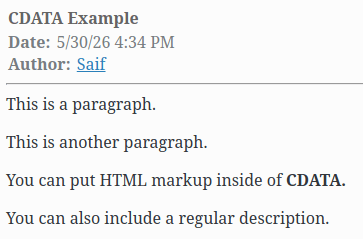
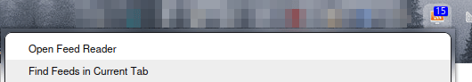
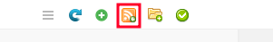
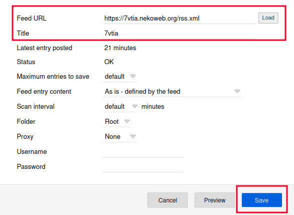
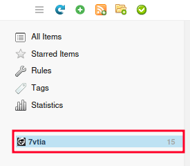

RSS
Posted
Modified
Index
Do you like RSS feeds? Do you want to make one for your website? No? Too bad.
First, what even is RSS?
RSS stands for Really Simple Syndication and it is a web feed that
allows anyone to receive updates to websites using something called a
feed reader.
You'll usually see these on somebody elses website
under the name "rss.xml" or a file ending in ".rss".
This is an example of an RSS feed:
<?xml version="1.0" encoding="UTF-8" ?>
<rss version="2.0" xmlns:atom="http://www.w3.org/2005/Atom">
<channel>
<title>feed title</title>
<description>posts from your-website.com</description>
<link>https://your-website.com</link>
<atom:link href="https://link-to-your-feed" rel="self" type="application/rss+xml" />
<webMaster>email@domain.com (name)</webMaster>
<!--Example Post-->
<item>
<title>post title</title>
<link>https://your-website.com/yourpost.html</link>
<guid isPermaLink="false">guid-here</guid>
<description>
Description Here
</description>
<pubDate>Day, dd Mon yyyy 00:00:00 +0000</pubDate> <!--Example Date: Thu, 29 Jun 2027 19:30:10 -0500-->
<author>email@domain.com (name)</author>
</item>
</channel>
</rss>
Everything is pretty self explanatory. You put the title in the <title> tags, the description in the <description> tags, and so on.
Keep in mind that GUIDs must be unique and in hexadecimal form (a-z, 0-9) and that items must be in descending order from newest to oldest.
This format is very nice for website updates that just need a simple summary, but what if you want to include your whole article in one item for something like, say, a blogpost? That's where CDATA comes in.
What is CDATA?
CDATA stands for Character Data, and it allows you to include HTML markup inside of your items. Here's an example:
<item>
<title>post title</title>
<link>https://your-website.com/yourpost.html</link>
<guid isPermaLink="false">guid-here</guid>
<description>
<![CDATA[
<p>This is a paragraph.</p>
<p>This is another paragraph.</p>
<p>You can put HTML markup inside of <strong>CDATA.</strong></p>
]]>
You can also include a regular description.
</description>
<pubDate>Day, dd Mon yyyy 00:00:00 +0000</pubDate> <!--Example Date: Thu, 29 Jun 2027 19:30:10 +0300-->
<author>email@domain.com (name)</author> <!--This is optional.-->
</item>
Here's a picture taken from Akregator that shows how the description would look:
{kind=link}

You can also put images and links, but I'm too lazy to re-do the example.
The example file can be viewed here.
Here's my RSS feed for Nekoweb as another example.
Feed Readers
Obviously, when you first open an RSS feed link, you only see a bunch of code. How do you see everything in an actually readable format? That's where feed readers come in.
A feed reader takes an RSS feed and turns it into something human-readable, and automatically fetches updates from there. I'll show you how to use one.
For this demonstration, I'm going to use Feedbro. First, you have to download Feedbro in your browser of choice. (I also recommend RSS Guard.)
{kind=link}

Once you download Feedbro, click on its icon and then on the "Open Feed Reader" button at the top.
{kind=link}

You'll see these icons in the top-left corner. Click on the one with the RSS logo to add a feed.
{kind=link}

Once you click the "Add a New Feed" button, you will see this pop-up. Input the Feed URL and Title and then click Save.
{kind=link}

The feed you added will now appear on the left panel. Congratulations, you've now set up your feed reader! You can add as many RSS feeds as you'd like using the same steps and get updates from them.
This post turned out a lot longer than I thought it would be. I hope this helps with your RSS needs!